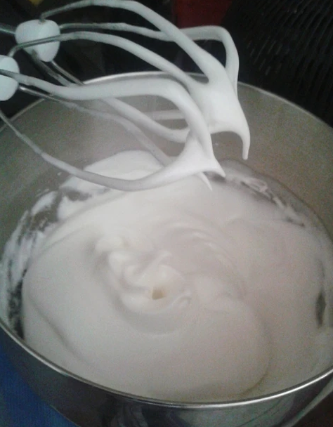
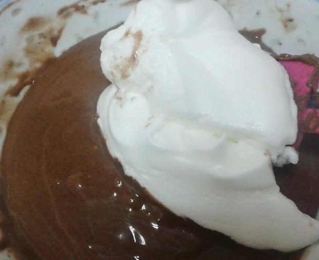
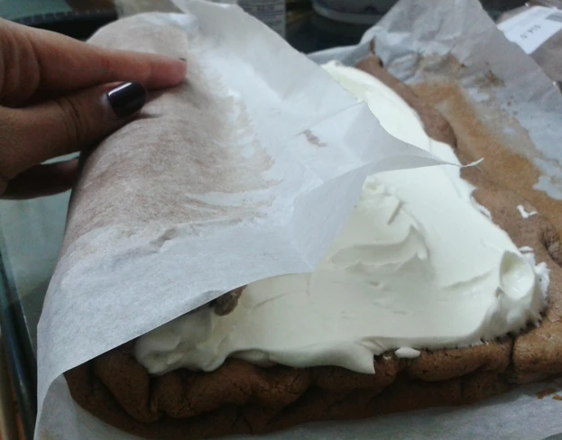

食材&作法
蛋白 4顆
糖 （打蛋白用） 35克
蛋黃 4顆
糖（打蛋黃用） 35克
低筋麵粉 60克
可可粉 20克
牛奶 35毫升
油 25毫升
鮮奶油 180毫升
糖 20克
1.先用打蛋器打發蛋白，出現泡沫時下糖繼續打發至末端堅挺。
2. 另一個碗內，打發蛋黃及糖，篩入麵粉及可可粉，再下牛奶及油拌勻至巧克力漿。
3. 將已打發的蛋白分三次拌入巧克力漿內，輕手拌勻。
4. 將蛋糕漿倒入蛋糕盤內，將蛋糕盤拍在枱上數下，讓空氣排出。放入烤箱170度烤15至18分鐘。
5. 將蛋糕連烘焙紙一起捲起，待涼。
6. 將蛋糕捲打開，塗上鮮奶油。
7. 慢慢捲起，放入冰箱30分鐘，切片享用。